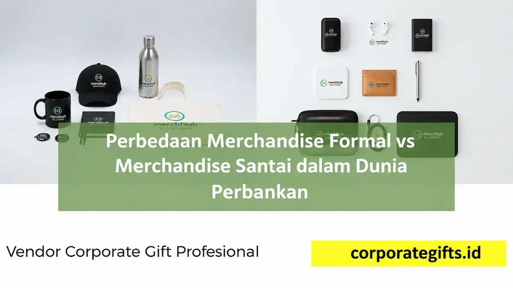

Corporate Gifts ID - Merchandise formal dan merchandise santai adalah dua kategori souvenir korporat yang dibedakan berdasarkan konteks acara di industri perbankan. Merchandise formal digunakan untuk agenda resmi kenegaraan atau institusi seperti serah terima jabatan dengan produk elegan berupa plakat kristal atau pen set eksklusif, sementara merchandise santai digunakan untuk kegiatan internal, gathering karyawan, maupun program loyalty nasabah dengan produk fungsional seperti tote bag dan tumbler custom. Pemilihan yang tepat di antara keduanya menentukan seberapa kokoh reputasi dan citra profesional sebuah bank tersampaikan.
Dunia perbankan identik dengan citra profesional, eksklusif, dan penuh kehati-hatian dalam membangun relasi dengan nasabah prioritas maupun mitra bisnis institusional. Karena itu, pemilihan cinderamata perusahaan tidak bisa disamaratakan untuk semua acara. Ada momen yang menuntut kesan mewah dan berwibawa, namun ada pula agenda yang justru lebih efektif diisi dengan merchandise santai agar tercipta suasana akrab, hangat, dan humanis.
Poin Kunci Merchandise Perbankan:
- Diferensiasi Konteks: Merchandise formal menonjolkan prestise institusional, sedangkan merchandise santai mempererat keterikatan emosional (engagement).
- Seleksi Material: Acara formal mensyaratkan material premium seperti kristal optik, logam gravir, dan kulit asli; acara santai mengedepankan fungsionalitas harian seperti canvas, stainless SUS304, dan silikon.
- Personalisasi Elegan: Penempatan logo perbankan pada item formal dirancang subtil (debossed/laser engraving), sementara pada item santai dapat dieksplorasi lebih dinamis dan fleksibel.
- Keseimbangan Branding: Bank yang terlalu kaku berisiko terkesan berjarak dari nasabah, sedangkan bank yang terlalu santai berisiko kehilangan wibawa profesional.
Menyelaraskan Pilihan Merchandise dengan Konteks Acara Perbankan
Dalam operasional perbankan modern, souvenir memegang peran ganda: sebagai ungkapan terima kasih formal sekaligus instrumen komunikasi visual merek. Menentukan cinderamata yang tepat memerlukan pemahaman menyeluruh terhadap profil audiens yang hadir dalam setiap acara.
Pemberian souvenir bernuansa kasual pada forum Rapat Umum Pemegang Saham (RUPS) atau penandatanganan kerja sama sindikasi kredit tentu akan terkesan kurang pantas. Sebaliknya, membagikan plakat berat pada acara fun walk atau family gathering karyawan akan terasa kaku dan kehilangan nilai guna praktisnya.
Merchandise Formal: Menegaskan Identitas Profesional & Reputasi
Merchandise formal biasanya dialokasikan untuk momen-momen seremonial berbobot tinggi, seperti pelantikan dewan direksi, pisah sambut pimpinan cabang, pertemuan antar-lembaga keuangan, atau apresiasi bagi nasabah private banking. Produk yang dipilih umumnya berkesan megah, tahan lama, dan memiliki nilai simbolis mendalam.
Contoh produk formal yang paling banyak diminati mencakup:
- Plakat kristal optik dengan ukiran 3D laser logo bank dan pesan apresiasi monogram.
- Pena metal eksekutif dengan mekanisme putar presisi dalam kotak beludru mewah.
- Gift set kulit premium yang memadukan card holder RFID protection, agenda kerja kulit, dan gantungan kunci elegan.
- Desk clock logam minimalis sebagai pemanis meja kerja jajaran eksekutif.
Merchandise formal tidak hanya berfungsi sebagai kenang-kenangan fisik, melainkan media representasi reputasi korporat jangka panjang yang memperlihatkan standar keunggulan bank di hadapan para pemangku kepentingan.

Kombinasi kurasi gift set eksekutif untuk agenda formal serta merchandise fungsional kasual untuk aktivitas harian karyawan bank.
Merchandise Santai: Membangun Kedekatan dan Kesan Humanis
Berbeda dengan kategori formal, merchandise santai ditujukan untuk mencairkan suasana dan memperkuat interaksi sehari-hari. Kategori ini sangat ideal untuk program apresiasi nasabah ritel, aktivasi booth festival keuangan, onboarding karyawan baru, hingga perayaan pencapaian target tim operasional.
Barang-barang seperti tote bag kanvas tebal, tumbler stainless vacuum flask, polo shirt berkerah kasual, hingga wireless powerbank custom menjadi opsi yang sangat digemari. Keunggulan utama merchandise santai adalah frekuensi penggunaannya yang tinggi di tempat umum, sehingga memberikan paparan promosi (brand exposure) berkelanjutan bagi bank bersangkutan.
Matriks Perbandingan Merchandise Formal vs Santai di Sektor Bank
Untuk memudahkan tim Corporate Secretary, HC, maupun Marketing Communication perbankan dalam merancang anggaran pengadaan souvenir, berikut tabel matriks komparasinya:
| Parameter Evaluasi | Merchandise Formal Perbankan | Merchandise Santai Perbankan |
|---|---|---|
| Tujuan Utama | Menegaskan wibawa, legalitas, dan apresiasi kehormatan tingkat tinggi. | Membangun engagement, keakraban tim, dan media promosi bergerak. |
| Material Dominan | Kristal optik, logam kuningan/aluminium matte, kulit asli, kayu mahoni. | Kanvas organik, stainless SUS 304, katun combed, plastik ramah lingkungan (ABS). |
| Contoh Produk | Plakat kristal, pulpen Parker gravir, executive desk set, leather briefcase. | Tumbler termos, canvas tote bag, mini powerbank, kaos polo, payung lipat otomatis. |
| Konteks Acara | Serah terima jabatan (Sertijab), RUPS, peresmian kantor cabang baru, B2B meeting. | Employee gathering, sport day perbankan, loyalty nasabah ritel, pameran expo. |
| Gaya Branding | Subtil, minimalis, laser engraving presisi, emboss foil emas/perak berkelas. | Full-color printing, sablon modern, ilustrasi kreatif dengan palet warna brand. |
Momentum Serah Terima Jabatan sebagai Contoh Nyata Merchandise Formal
Salah satu contoh paling krusial dari penerapan merchandise formal adalah prosesi serah terima jabatan (Sertijab) pimpinan wilayah atau pimpinan cabang di industri perbankan nasional. Agenda ini sarat dengan pesan estafet kepemimpinan dan dedikasi pengabdian bertahun-tahun.
Dalam momentum sakral ini, pemberian cinderamata eksklusif seperti trophy logam berdesain kustom atau set pena bertinta arsip berharga menjadi simbol pengakuan tertinggi atas kontribusi strategis sang pejabat. Pilihan hadiah yang dirancang dengan teliti mencerminkan nilai-nilai integritas dan kehormatan yang dijunjung tinggi oleh institusi keuangan tersebut.
Tips Memilih Merchandise yang Tepat untuk Institusi Perbankan
Agar pengadaan merchandise instansi keuangan berjalan efektif dan memberikan dampak positif optimal, pertimbangkan tiga langkah panduan berikut:
1. Sesuaikan dengan Karakter dan Jabatan Audiens
Lakukan segmentasi yang jelas terhadap profil penerima. Untuk jajaran komisaris, direksi, dan regulator perbankan, merchandise formal dengan sentuhan personalisasi nama adalah pilihan mutlak. Namun untuk generasi nasabah muda (Gen Z & Milenial) atau staf internal kantor, merchandise bergaya kasual dan fungsional akan dinilai jauh lebih berkesan serta relevan.
2. Ikuti Tren Modern Tanpa Menghilangkan Identitas Korporat
Perbankan masa kini dituntut tampil dinamis dan melek teknologi. Mengadopsi tren produk berkelanjutan seperti eco-friendly tumbler bambu atau smart merchandise seperti USB card multifungsi dapat memperkuat persepsi bank yang inovatif tanpa mengorbankan standar keanggunan korporasi.
3. Prioritaskan Kualitas Material dan Durabilitas Produk
Apapun kategori merchandise yang dipesan, standar kualitas tidak boleh dikompromikan. Souvenir yang mudah rusak atau memiliki cetakan logo yang cepat luntur justru akan menurunkan kredibilitas brand di mata nasabah. Pastikan selalu bermitra dengan vendor berpengalaman yang menyediakan sampel pra-produksi (mockup) untuk verifikasi mutu fisik sebelum produksi massal dijalankan.
Kesimpulan: Harmoni Strategis Souvenir Formal dan Santai
Perbedaan merchandise formal dan santai dalam dunia perbankan pada hakikatnya bukan sekadar pemilihan variasi produk fisik, melainkan strategi komunikasi merek yang cermat dan terukur. Merchandise formal menegaskan profesionalisme, wibawa, dan penghargaan institusional, sedangkan merchandise santai membuka ruang kedekatan emosional yang hangat bagi nasabah serta karyawan.
Kombinasi harmonis antara kedua pendekatan ini memungkinkan institusi perbankan menjaga reputasinya tetap kokoh dan berintegritas, sekaligus tetap dekat di hati masyarakat.
Konsultasikan kebutuhan pengadaan cinderamata perbankan Anda bersama tim konsultan Corporate Gifts ID untuk mendapatkan rekomendasi paket eksklusif, sampel gratis, dan penawaran B2B terbaik.